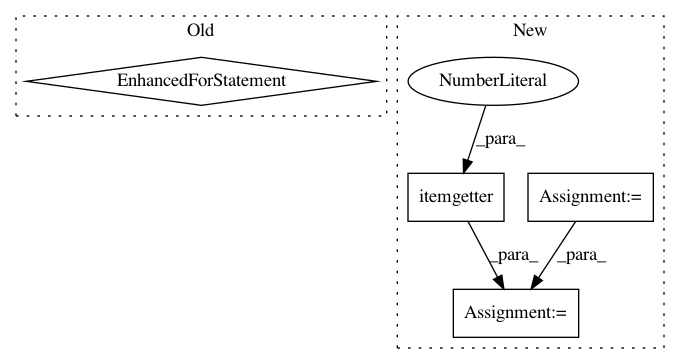

ebb357210205d3ad5fef77e8d33904625fb02a24,loudml/loudml/fingerprints.py,FingerprintsModel,show,#FingerprintsModel#Any#,684
Before Change
grid = []
for x in range(self.h):
for y in range(self.w):
cnt = counts[x,y]
grid.append({
"location": (x, y),
"count": cnt,
"_fingerprint": centroids[som_model.location(x,y)].tolist(),
})
result["grid"] = grid
return result
def generate_fake_prediction(self):
After Change
locations[x,y] = l
if show_summary == True:
l = [ [x, y, locs] for (x, y), locs in locations.items() ]
detail = "\n".join("{},{}: {}".format(x, y, loc) for x, y, loc in sorted(l, key = operator.itemgetter(0, 1)))
grid = "\n".join(["".join(["{:3}".format(cnt) for cnt in row]) for row in counts])
return grid + "\n" + detail
return result
In pattern: SUPERPATTERN
Frequency: 3
Non-data size: 4
Instances
Project Name: regel/loudml
Commit Name: ebb357210205d3ad5fef77e8d33904625fb02a24
Time: 2019-02-10
Author: sebastien.regel@gmail.com
File Name: loudml/loudml/fingerprints.py
Class Name: FingerprintsModel
Method Name: show
Project Name: D2KLab/entity2rec
Commit Name: 7bc39cb0f8ee7d380263875462f0580565f27694
Time: 2017-12-18
Author: enricopalumbo0@gmail.com
File Name: entity2rec/sparql.py
Class Name: Sparql
Method Name: _get_properties
Project Name: biocore/scikit-bio
Commit Name: 79abb6cd899d2004bcf95778ebbda06c8b4a0f91
Time: 2015-12-08
Author: mcdonadt@colorado.edu
File Name: skbio/tree/_tree.py
Class Name: TreeNode
Method Name: _set_max_distance